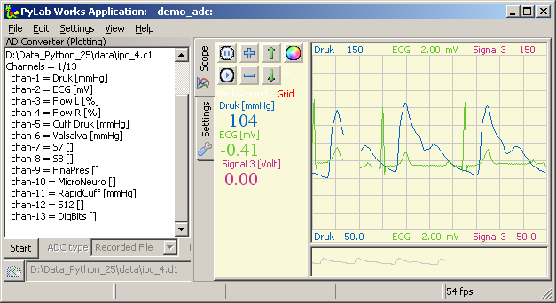

Demo: Demo_ADC (june 2009)
This demo shows a real-time data-acquistion, with real-time (chunk) analysis. Because this program uses a windows executable to perform the data-acquisition, it doesn't yet work on Linux. I hope someone is able to write a platform independent DAQmx driver, then we all can see this demo and more. In this case you don't need the desired hardware, because the data-acquisition is set to file-mode, in which case already recorded data is play backed.
The recorded signals shown are the green: the electrical activity of the heart (Electro-CardioGram / ECG), blue: the interarterial bloodpressure.
